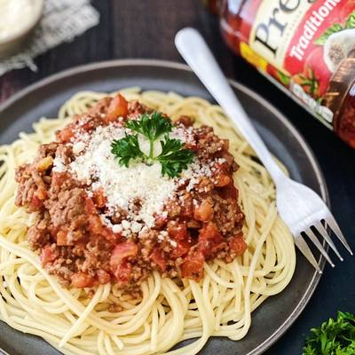

Bolognese Pasta

This fettuccine carbonara is a delectable, mouth-watering pile of yummy goodness! I recommend a nice salad with it — that's all you will need for a complete meal.
Ingredients
- Olive oil
- Onion
- Carrot
- Rib
- Pancetta
- Pasta
Steps
- Heat 1 tablespoon of the olive oil in a large, heavy saucepan until shimmering. Add the onion, carrot, celery, and pancetta and cook over moderate heat, stirring occasionally, until the vegetables are softened but not browned, about 8 minutes. Scrape the vegetable mixture into a large bowl.
- Add the remaining 3 tablespoons of olive oil to the saucepan and heat until just shimmering. Add the beef, veal, and pork and cook over moderately high heat until just barely pink, about 5 minutes.
- Return the vegetable mixture to the saucepan. Add the garlic and cook over high heat until fragrant, about 1 minute.